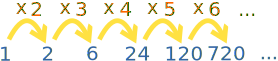
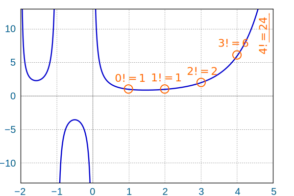

Gamma Function
The Gamma Function serves as a super powerful version of the factorial function.
Let us first look at the factorial function:
|
The factorial function (symbol: !) says to multiply all whole numbers from our chosen number down to 1. Examples:
|
We can easily calculate a factorial from the previous one:

As a table:
| n | n! | ||
|---|---|---|---|
| 1 | 1 | 1 | 1 |
| 2 | 2 × 1 | = 2 × 1! | = 2 |
| 3 | 3 × 2 × 1 | = 3 × 2! | = 6 |
| 4 | 4 × 3 × 2 × 1 | = 4 × 3! | = 24 |
| 5 | 5 × 4 × 3 × 2 × 1 | = 5 × 4! | = 120 |
| 6 | etc | etc |
In fact we have this general rule:
n! = n × (n−1)!
Which says
"the factorial of any number is that number times
the factorial of (that number minus 1)"
So 10! = 10 × 9!, ... and 125! = 125 × 124!, etc.
Note: this is a "recurrence relation"
Beyond Whole Numbers
Can we have a function that works more generally? If so, what properties do we want?
Firstly, it should "hit the mark" at each whole number:
f(x) = x! for whole numbers
Here are some examples that do that:
Straight Lines
Anything Goes
Smooth
Next, we want this to be true:
f(z) = z f(z−1) in between the whole numbers

f(b) = b f(b−1)
Example: f(2.62) = 2.62 × f(1.62)
We also need a special condition to keep it smooth called "logarithmically convex": the composition of the logarithm with our function should be convex.
Many functions have been discovered with those properties. They each have good and bad points.
The one most liked is called the Gamma Function (Γ is the Greek capital letter Gamma):
It is a definite integral with limits from 0 to infinity.
It matches the factorial function for whole numbers (but sadly we must subtract 1):
So:
- Γ(1) = 0!
- Γ(2) = 1!
- Γ(3) = 2!
- etc
Let's see how to use it.
How about n=1
Good so far, but does it work generally (z not restricted to integers)?
Let us try:
We can use Integration by Parts with u=xz and v=e−x. There are many steps, but the key points are:
And −xz e−x goes to 0 as z goes to infinity, so it all simplifies to:
And the remaining integral is actually the Gamma Function for z, so:
So it works generally.
And here is a plot of the Gamma Function:

But at x = 0 or less it works everywhere except at integer values because
- Γ(0) = Γ(1)/0 is undefined (dividing by zero),
- and so Γ(−1) = Γ(0)/−1 is also undefined,
- etc
Try comparing two values on the graph that are 1 apart on the x axis and see if it is true that Γ(z+1) = z Γ(z)
Complex
The Gamma Function also works for Complex Numbers so long as the real part is greater than 0.
Half
We can calculate the gamma function at a half (quite a few steps!) to get a surprising result:
Γ(12) = √π
Knowing that Γ(z+1) = z Γ(z) we get these "half-integer" factorials:
| Gamma | Γ(z+1) = z Γ(z) | Factorial | |
| Γ(12) | √π | (−12)! | |
| Γ(32) | = 12Γ(12) = | 12√π | (12)! |
| Γ(52) | = 32Γ(32) = | 34√π | (32)! |
| Γ(72) | = 52Γ(52) = | 158√π | (52)! |
| ... | ... | ... | ... |
Also check if the graph above gets them right.
Applications
Just like the Factorial function there are many uses for the Gamma function in Combinatorics, Probability and Statistics. It is also very useful in Calculus and Physics.
So there you have it: the Gamma Function may be a little hard to calculate but it neatly extends the factorial function beyond whole numbers.